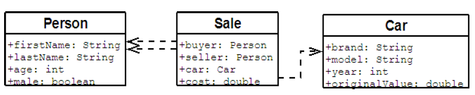

About this Article
Date Released:
Monday, December 31 2012 2:00 AMNo more loops with Scala
자바에서는 일반적으로 loop를 기반으로 컬렉션을 다룬다.
차세대 자바 프로그래밍 스타일 에서도 살펴본 것과 같이 loop가 컬렉션을 다루는 가장 좋은 방법은 아니다. loop는 코드의 가독성을 빠르게 망가뜨린다. 함수가 1급 객체인 언어들에서는 이러한 loop를 명시적으로 노출시키지 않고 고차 함수 로 추상화 시킨다. 이런 추상화 덕분에 컬렉션을 다루는 방법이 매우 간결하고 직관적이다.
자바에서도 함수형 스타일로 컬렉션을 다루고자 한 시도로 lambdaj 프로젝트가 있다.
lambdaj가 만들어진 이유는 다음과 같다
복잡한 데이터 모델을 다루는 프로젝트에서 비즈니스 로직의 상당 부분은 어떤 작업을 위해서 비지니스 객체의 컬렉션을 순회하는 일의 반복이다. loop는 조건이 추가되거나 중첩되기 시작하면 코드를 작성하는것 보다 읽기가 더 어려워진다. 그렇기 때문에 비지니스 로직이 조금 더 기술적인 부분과 분리되어 작성되기를 원한다.
lambdaj를 사용하면 비교적 선언적 스타일로 loop를 추상화 할 수 있지만 자바 문화에는 이런 코딩 방법을 장려하지 않는다. 고차 함수를 통한 추상화와 고차 함수가 일반적인 언어인 Scala를 사용해서 lambdaj에서 목표로 하는 부분을 하나씩 풀어보자.
먼저 예제에서 사용할 데이터 모델을 정의해 보자.

/**
* 데모에서 사용할 데이터 모델
* 사람, 판매, 차 객체가 있으며 각 클래스는 위 그림과 같은 관계를 가지고 있다.
*/
case class Person(firstName: String, lastName: String, age:Int, male: Boolean)
case class Sale(buyer: Person, seller: Person, car: Car, cost: Double)
case class Car(brand: String, model: String, year: Int, originalValue: Double)
object db {
// cars
val sonata = Car("Hyundai", "Sonata", 1982, 30000000)
val santafe = Car("Hyundai", "Santafe", 1990, 50000000)
val k7 = Car("KIA", "K7", 2000, 50000000)
val k9 = Car("KIA", "K9", 2008, 70000000)
val orlando = Car("GM", "Orlando", 2011, 30000000)
val chevrolet = Car("GM", "Chevrolet", 2010, 50000000)
val alpheon = Car("GM", "Alpheon", 2012, 70000000)
def cars = List(sonata, santafe, k7, k9, orlando, chevrolet, alpheon);
// persons
val daewon = Person("daewon", "jeong", 31, true)
val youngtek = Person("youngtek", "hong", 32, true)
val jiwong = Person("jiwong", "kang", 34, true)
val taehee = Person("taehee", "kim", 32, false)
def persons: List[Person] = List(youngtek, daewon, jiwong, taehee)
// sales
def sales: List[Sale] = List(Sale(daewon, taehee, sonata, 30000000),
Sale(daewon, youngtek, santafe, 50000000),
Sale(daewon, jiwong, santafe, 50000000),
Sale(jiwong, taehee, santafe, 50000000),
Sale(taehee, daewon, chevrolet, 50000000),
Sale(youngtek, daewon, chevrolet, 50000000),
Sale(youngtek, taehee, orlando, 30000000),
Sale(taehee, jiwong, chevrolet, 30000000))
}
01. Car 목록에서 모든 brand를 출력해 보자
// Iterative version
StringBuilder sb = new StringBuilder();
for (Car car : db.getCars()) {
db.append(car.getBrand()).append(", ");
String brands = sb.toString().substring(0, sb.length()-2);
}
// Functional version
val allcarBrands = db.cars map(_.brand) mkString(", ")
반복 버전에 코드를 살펴보자. 비교적 짧은 코드지만 여러가지 일을 하고 있다. 왜 sb.length() -2 라는 함수가 호출될가? 혹시 구분자에서 ',' 와 같이 공백을 없애면 어떻게 될가? 불필요하게 읽어야 하는 코드가 많다. 우리가 원하는 것은 Car 목록에 모든 brand를 ', ' 구분자로 묶어서 출력하는 것이다.
함수형 버전을 살펴보자. Car 목록으로부터 brand목록을 만들고 이 목록을 ', ' 구분자로 묶어서 문자열을 만들었다. 반복 버전에 비해서 코드가 선언적이기 때문에 코드가 하고자 하는 일을 빠르게 알아챌 수 있다.
02. Hyundai 차를 판매하는 모든 Sale객체를 선택해 보자
// Iterative version
// Select all sales of a Ferrari
List<Sale> salesOfAFerrari = new ArrayList<Sale>();
for (Sale sale : sales) {
if (sale.getCar().getBrand().equals("Ferrari")) {
salesOfAFerrari.add(sale);
}
}
// Functional version
val salesOfHyundai = db.sales.filter(_.car.brand == "Hyundai")
반복 버전을 살펴보자. Ferrari 브랜드를 가진 Sale객체를 찾기 위해서 Sale객체를 loop으로 순회하면서 brand가 'Ferrari'인지를 비교한다.
함수형 버전을 살펴보자. filter함수와 술어 함수를 사용해서 loop와 if 부분을 암묵적으로 처리했다. 코드를 읽어보자. 코드와 구하려는 목적이 1:1로 일치한다.
03. 가장 어린 사람과 나이가 같은 판매자들 찾아보자
// Iterative version
// find youngest person in persons
Person youngest = null;
for (Person person : persons){
if (youngest == null || person.getAge() < youngest.getAge()) {
youngest = person;
}
}
// find buyer have age equal to younggest person
List<Sale> buys = new ArrayList<Sale>();
for (Sale sale : sales){
if (sale.getBuyer().equals(youngest)) {
buys.add(sale);
}
}
// Functional version
val youngestPerson: Person = db.persons.minBy( _.age )
val buys = db.sales.filter( _.buyer == youngestPerson )
반복 버전을 살펴보자. 가장 어린 사람을 찾고, 이 사람과 나이가 같은 판매자를 찾기 위해서 불필요하게 많은 코드를 작성헸다.
함수형 버전을 살펴보자. 반복 버전에 비해서 코드가 극적으로 줄었다. minBy함수와 filter 함수를 사용해서 모든 명시적 loop을 감췄다. 코드를 표현된 그대로 읽어보자. 가장 어린 사람을 찾고(db.persons.minBy( _.age )) 이 사람과 나이가 같은 판매자들을 걸러내라(sales.filter( _.buyer == youngestPerson ))
코드에 그대로 원하는 바가 표현됬다. 여기서 주목할 점은 minBy 나 filter 와 같은 함수가 고차 함수로 구현되어 있다는 것이다.
04. 가장 비싸게 판매한 Sale객체를 찾아보자
// Iterative version
double maxCost = 0.0;
for (Sale sale : sales) {
double cost = sale.getCost();
if (cost > maxCost) {
maxCost = cost;
}
}
// Functional version
val maxCost = db.sales.maxBy(_.cost).cost
3번 예제에서 설명했던 것과 같다. 함수형 버전은 보다 선언적인 방법으로 목표에 도달했다.
05. 남자가 남자에게 차를 판매한 것에 대한 총 합을 구해보자
// Iterative version
double sum = 0.0;
for (Sale sale : sales) {
if (sale.getBuyer().isMale() && sale.getSeller().isMale()) {
sum += sale.getCost();
}
}
// Functional version
val sum = db.sales.filter(sale => sale.buyer.male && sale.seller.male).map(_.cost).sum
반복 버전을 살펴보자. 3번 예제와 거의 동일하게 loop을 순회하는 것을 확인할 수 있다. 위에서 설명했던 비지니스 객채의 순회를 반복한다 부분이 바로 이 부분이다. 함수형 버전을 보면 이런 부분이 모두 감춰져 있음을 알 수 있다.
06. 5000000원 이상을 구매한 가장 어린 사람을 찾아보자
// Iterative version
int age = Integer.MAX_VALUE;
for (Sale sale : sales) {
if (sale.getCost() > 50000.00) {
int buyerAge = sale.getBuyer().getAge();
if (buyerAge < age) {
age = buyerAge;
}
}
}
// Functional version
val age = db.sales.filter(_.cost >= 50000000).minBy(_.buyer.age).buyer.age
반복 버전을 살펴보자. 한 루프에 여러가지 조건이 섞여있다. 50,000 이상에 값을 가지는 Sale 객체 중에서 buyer 나이가 가장 어린 사람을 찾는 코드라는 것을 한눈에 알 수 있을까?
함수형 버전을 살펴보자. Sale 객체 목록에서 가격이 50000000이상인 값을 추린 목록에서 가장 작은 값을 buyer에 나이로 구했다. 한눈에 코드가 원하는 것을 알 수 있다.
07. Sale 객체 목록을 를 가격 순으로 정렬해 보자
// Iterative version
List<Sale> sortedSales = new ArrayList<Sale>(sales);
Collections.sort(sortedSales, new Comparator<Sale>() {
public int compare(Sale s1, Sale s2) {
return Double.valueOf(s1.getCost()).compareTo(s2.getCost());
}
});
// Functional version
val sortedSales = db.sales.sortBy(_.cost)
반복 버전도 충분히 깔끔하지만, 뭐랄까 조금 코드가 너저분 하다. 자바가 익명 함수를 지원하지 않기 때문에 익명 객체를 생성해서 이를 처리했기 때문이다. 함수형 버전은 같은 목표를 훨씬 적은 양의 코드로 해결했다.
08. Car 객체 목록 에서 original cost를 가져와서 새로운 목록을 생성해 보자
// Iterative version
List<Double> costs = new ArrayList<Double>();
for (Car car : cars) {
costs.add(car.getOriginalValue());
}
// Functional version
val costs = db.cars.map(_.originalValue)
map함수는 함수형 언어에서 굉장히 많이 사용되는 함수다. map 함수는 A 목록으로부터 함수 F를 적용한 목록 B를 생성한다. cars목록으로부터 originalValue를 추출하는 함수를 적용해서 cost목록을 생성했다.
09. Car 객체 목록을 brand로 그루핑 해 보자
// Iterative version
Map<String, List<Car>> carsByBrand = new HashMap<String, Car>();
for (Car car : db.getCars()) {
List<Car> carList = carsByBrand.get(car);
if (carList == null){
carList = new ArrayList<Car>();
carsByBrand.put(car.getBrand(), carList);
}
carList.add(car);
}
// Functional version
val carsByBrand = db.cars.groupBy(_.brand)
반복 버전이 하는 일을 살펴보자. 같은 브랜드를 가진 차들의 목록을 그루핑 하는 코드다 한눈에 보이는가? 함수형 버전을 보면 원하는 목적이 선언적으로 표현되어 있음을 알 수 있다.
10. Sale 객체 목록을 buyers 와 sellers 로 그루핑 해 보자
// Iterative version
Map<Person,Map<Person,Sale>> map = new HashMap<Person,Map<Person,Sale>>();
for (Sale sale : sales) {
Person buyer = sale.getBuyer();
Map<Person, Sale> buyerMap = map.get(buyer);
if (buyerMap == null) {
buyerMap = new HashMap<Person, Sale>();
map.put(buyer, buyerMap);
}
buyerMap.put(sale.getSeller(), sale);
}
Person youngest = null;
Person oldest = null;
for (Person person : persons) {
if (youngest == null || person.getAge() < youngest.getAge()){
youngest = person;
}
if (oldest == null || person.getAge() > oldest.getAge()) {
oldest = person;
}
}
Sale saleFromYoungestToOldest = map.get(youngest).get(oldest);
// Functional version
val map = db.sales.groupBy(_.buyer).mapValues(ls => ls.groupBy(_.seller).mapValues(_.head))
val youngest = db.persons.minBy(_.age)
val oldest = db.persons.maxBy(_.age)
val saleFromYoungestToOldest = map(youngest)(oldest)
반복 버전을 살펴보자. 한눈에 알아보기엔 코드가 너무 어렵다. 목적 자체가 코드에 잘 드러나지 않기 때문이다. 한번 천천히 읽어보자. 구하려는 목적에 비해서 코드가 지나치게 길다는 것을 느낄 수 있다.
함수형 버전을 살펴보자. 차이가 큰 부분을 보면 가장 어린 사람과 늙은 사람을 구하는 부분이 함수형 코드에서는 2 라인으로 분리가 되어 있으나 반복형 버전에는 한 루프 안에서 이 둘을 모두 구하려고 하고 있다. 반복형 버전이 약간의 속도적 이득은 있겠지만 가독성이라는 면에서는 비교가 되지 않을 정도로 함수형 버전이 명료하다. 단순하게 코드가 짧은게 아니라 원하는 목적을 정확하게 표현하고 있기 때문이다.
11. 가장 많이 구매한 차를 구해보자
// Iterative version
Map<Car, Integer> carsBought = new HashMap<Car, Integer>();
for (Sale sale : sales) {
Car car = sale.getCar();
Integer boughtTimes = carsBought.get(car);
carsBought.put(car, boughtTimes == null ? 1 : boughtTimes+1);
}
Car mostBoughtCarIterative = null;
int boughtTimesIterative = 0;
for (Entry<Car, Integer> entry : carsBought.entrySet()) {
if (entry.getValue() > boughtTimesIterative) {
mostBoughtCarIterative = entry.getKey();
boughtTimesIterative = entry.getValue();
}
}
// Functional version
val carsBought = db.sales.groupBy( _.car ).mapValues( _.length )
val mostBoughtCar = carsBought.maxBy { case (car, boughtCount) => boughtCount }._1
val boughtTimes = carsBought(mostBoughtCar)
마지막 예제다. 역시 반복형 버전에 비해서 함수형 버전이 짧고 간결하다.
고차 함수는 컬렉션을 다루는 탁월한 방법이다.
위 예에서 살펴볼 수 있듯이 고차 함수를 사용하면 컬렉션을 훨씬 직관적으로 다룰 수 있다. 함수형 언어들에서 컬렉션을 다루는 방법인 groupBy, map, filter, maxBy, minBy 등과 같은 함수들은 모두 함수를 인자로 받는 고차 함수다. 함수를 인자로 받기 때문에 컬렉션에 원소에 구애받지 않고 코드를 추상화 할 수 있으며, 이런 높은 수준의 추상화는 많은 부분에서 코드를 읽기 좋게 만든다.